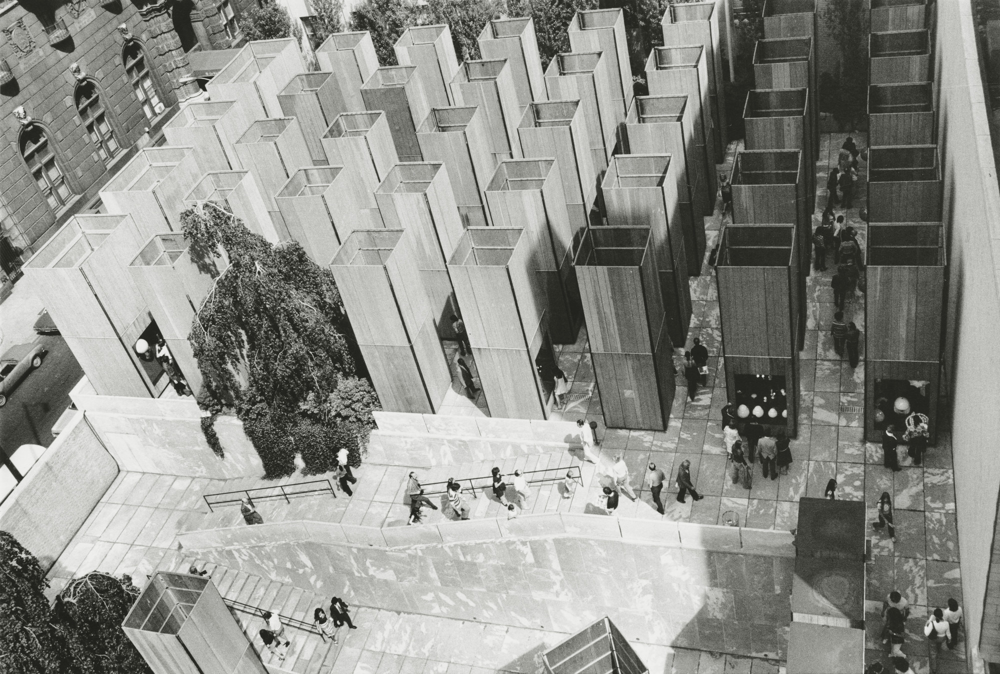
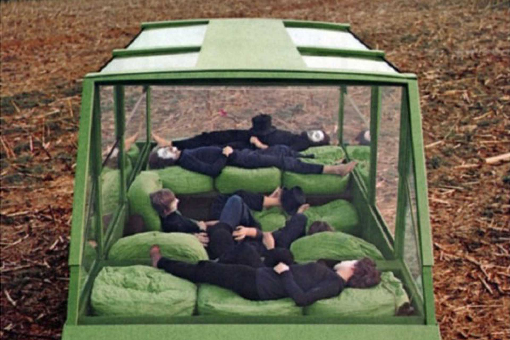
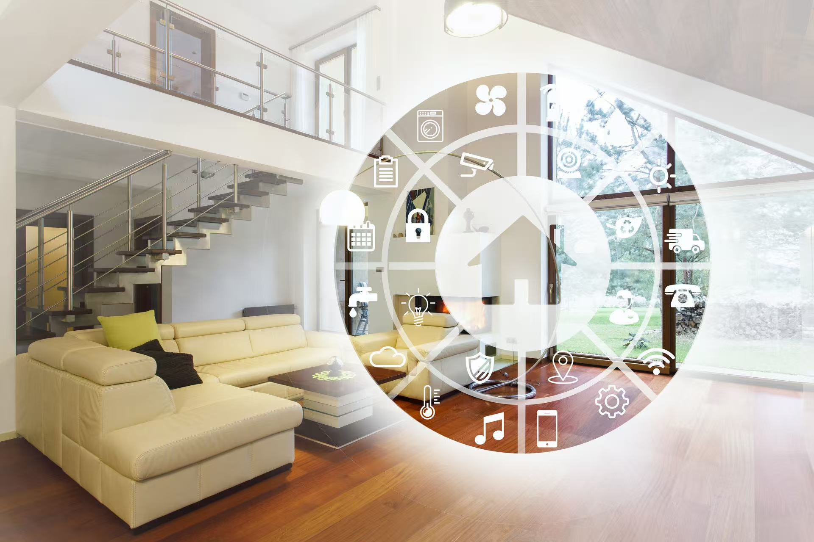
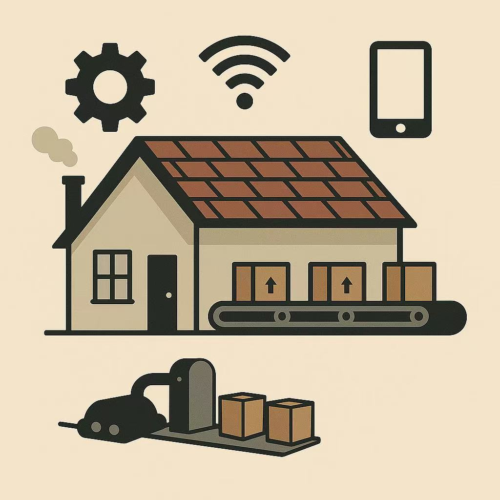
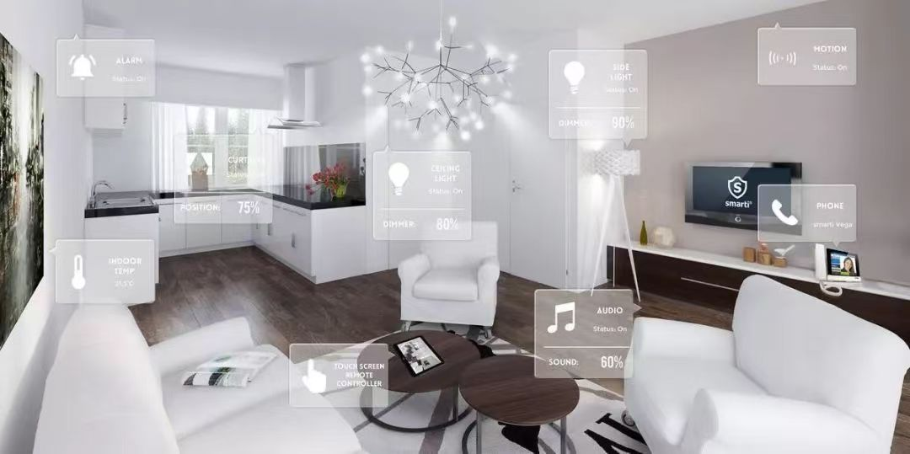

<!DOCTYPE html>
<html lang="zh">
<head>
    <meta charset="UTF-8">
    <title></title>
    <link rel="stylesheet" href="style.css">
</head>
<body>
<div class="con">
    <div class="chart_con">
        <div class="chart">
            <div class="chart_title">
                Honeywell, I’m Home!  The Internet of Things and the New  Domestic Landscape
                <br>
                <span>Justin McGuirk</span>
            </div>
            <div class="chart_list" id="scrollContainer">
                <div class="progress-bar" id="progressBar"></div>
                <div class="left_text_chart">
                    <p>
                        In 1972, as part of MoMA’s exhibition “Italy: The
                        New Domestic Landscape,” the Radical Design
                        group Superstudio installed a small cubic room
                        with mirrored walls that appeared to replicate itself
                        into infinity. The group’s proposal, submitted to
                        the curator Emilio Ambasz, had taken the form of
                        a one-page statement describing exactly how this
                        “microenvironment” should be installed, followed by
                        a further nine typed pages of theoretical exposition
                        by Superstudio’s cofounder Adolfo Natalini. In those
                        nine pages—a manifesto of sorts, veering off into
                        prose poems and short stories—Natalini outlines a
                        new way of living. The attributes of this hypothetical
                        existence include “permanent nomadism,” “life
                        without objects,” and “life without work.” These
                        conditions are made possible by a mysterious
                        gridded structure that Natalini refers to only as “the
                        network.”
                    </p>
                </div>
                <div class="left_text_chart">
                    <p></p>
                </div>
                <div class="left_text_chart">
                    <p></p>
                </div>
                <div class="right_text_chart">
                    <p>
                        It is only too easy to root around in the archives,
                        extract something highly selective, and proclaim
                        this or that radical to have been prophetic. In
                        this case, however, Natalini’s vision appears
                        uncannily prescient. Of course, “the network” of his
                        imagination was simply an act of wish fulfillment—
                        he hadn’t the slightest idea what it was exactly
                        (although, by coincidence, 1972 was also the year that ARPANET was first demonstrated in
                        public), he knew only that it was a “total system of
                        communication.” In Superstudio’s photo-collages,
                        it took the form of a grid—either an abstract gridded
                        plane or a gridded megastructure called The
                        Continuous Monument. Theirs was only a mock
                        utopia, serving to critique both modernism and
                        consumerism, and yet, ineluctably, the network
                        came to pass. It is not, however, a megastructure.
                        In fact, for all intents and purposes—for the majority
                        who cannot see the server farms and the undersea
                        cables—it is invisible.
                    </p>
                </div>
                <div class="right_text_chart">
                    <p></p>
                </div>
                <div class="left_text_chart">
                    <p>
                        The effects of the network age on urban life in
                        the early twenty-first century are roughly as Natalini
                        predicted, if less utopian. Immaterial labor has led
                        to a flexible but precarious existence in which,
                        for the young at least, “permanent nomadism”
                        is not so far from the truth. Objects, meanwhile,
                        are dematerializing into live streams, downloads,
                        e-books, smartphone apps, and the so-called
                        “sharing economy.” We have witnessed the primacy
                        of software over hardware.
                    </p>
                </div>
                <div class="left_text_chart">
                    <p>
                        Most significantly, what we think of as “domestic
                        space” is being completely redefined. We need look
                        no further than the rise and rise of Airbnb. The rental
                        website epitomizes a new era of nomadic, vicarious
                        living, in which one can simply slip into different
                        lifestyles like dresses. Its evangelists proclaim a
                        utopian mission of sharing over owning (CEO Brian
                        Chesky famously claims not to own a home), and
                        like good neo-Marxists they talk of use-value rather
                        than exchange-value. But of course Airbnb enables
                        a global population to be part of the rentier class. It
                        is as much a symptom of precarity as of networked
                        living—it is the means by which many now pay their
                        own rents and mortgages. Airbnb is what we have
                        instead of state-subsidized affordable housing, and
                        it is leading to the wholesale commodification of
                        domestic space.
                    </p>
                </div>
                <div class="left_text_chart">
                    <p></p>
                </div>
                <div class="right_text_chart">
                    <p>
                        For the first time since the mid-twentieth
                        century—with its labor-saving household
                        appliances and rising quality of life—the domestic
                        is once again the site of radical change. And though
                        domestic space appears to fall within the realm
                        of architecture, architects themselves have been
                        almost mute on the implications of such change.
                    </p>
                </div>
                <div class="right_text_chart">
                    <p>
                        Architecture, it seems, has given up its dreams of
                        imagining how we might live, and so into that void
                        technology is rushing.
                    </p>
                </div>
                <div class="right_text_chart">
                    <p>
                        That tired old trope of “the
                        house of the future” has been replaced by what
                        is now called the “smart home.” The smart home
                        is the network’s great white hope for ubiquitous connectivity. It sounds benign enough, and may
                        conjure Jacques Tati-style mise-en-scènes
                        populated by absurd devices—the smart home is
                        prime territory for farce—but it is also an ideology.
                    </p>
                </div>
                <div class="right_text_chart">
                    <p>
                        It is the house-shaped manifestation of the internet
                        of things, according to which all our devices and
                        appliances will join the network, communicating
                        with us and each other.
                    </p>
                </div>
                <div class="left_text_chart">
                    <p>
                        To say that the internet of things is an ideology
                        is to suggest that the use-value of the concept has
                        yet to be sold to the consumer.
                    </p>
                </div>
                <div class="left_text_chart">
                    <p>
                        It is easily mocked
                        by skeptical hacks who question the need for
                        talking fridges and washing machines that you can
                        program with your smartphone (“You still need to
                        put the clothes in yourself, right?”). Bruce Sterling
                        argues that the internet of things has nothing to
                        do with the consumer and everything to do with
                        the business interests of the service providers.
                    </p>
                </div>
                <div class="left_text_chart">
                    <p>
                        Given that data is the new currency, the internet
                        of things is an epic power grab by the lords of
                        the network—Sterling focuses on the “big five” of
                        Google, Amazon, Facebook, Apple, and Microsoft—
                        to gain control of as much human data as physically
                        possible.
                    </p>
                </div>
                <div class="left_text_chart">
                    <p>
                        1 As the primary interface of the internet
                        of things, the smart home is effectively the tendrils
                        of the network rising out of the ground and into every one of our household appliances to allow
                        mass data collection and digital surveillance.
                    </p>
                </div>
                <div class="right_text_chart">
                    <p>
                        That, at least, is one interpretation. It goes
                        without saying that the internet of things agenda
                        is being driven by the technology industry with
                        the eager boosterism of the business community,
                        which sees a blizzard of dollar signs.
                    </p>
                </div>
                <div class="right_text_chart">
                    <p>
                        And while the evangelists of the IoT would hardly define
                        themselves in Sterling’s terms, neither do they
                        contradict him.
                    </p>
                </div>
                <div class="right_text_chart">
                    <p>
                        As an effusive cover story in the
                        Harvard Business Review put it recently, “It is the
                        expanded capabilities of smart, connected products
                        and the data they generate that are ushering in a
                        new era of competition.”
                    </p>
                </div>
                <div class="left_text_chart"><p>
                    The question is, what are the implications for
                    architecture? Do these developments have spatial
                    ramifications? Should we plan and build in new
                    ways to accommodate this technological surge, or
                    is it just a case of running a few extra wires into the
                    walls?
                </p></div>
                <div class="left_text_chart"><p>
                    Can architects continue to design according
                    to age-old principles of good form and sound
                    proportions (or stick to the boilerplate floor plans
                    prescribed by greedy developers, as the case
                    may be)?
                </p></div>
                <div class="right_text_chart"><p>
                    The history of architectural historians
                    overlooking the impact of technological innovations is a long one, and its best chronicler was
                    Reyner
                    Banham.
                </p></div>
                <div class="right_text_chart"><p>
                    In The Architecture of the Well-Tempered
                    Environment, he charts the effects of successive
                    environmental revolutions, such as electric lighting
                    and air-conditioning, on built form.
                </p></div>
                <div class="right_text_chart"><p>
                    Banham’s geeky enthusiasm for ducting and electrical
                    services enables him to propose a parallel history of
                    architecture according to which the Royal Victoria
                    Hospital in Belfast (1903), despite its outmoded,
                    castellated styling, was “far more pioneering than
                    anything that had been designed by Walter Gropius”
                    because it was the first building to include a form of
                    air-conditioning.
                </p></div>
                <div class="left_text_chart"><p>
                    The trajectory of this parallel history takes in the
                    invention of the suspended ceiling, in the late 1940s,
                    which was required to hide the electrical services
                    once concrete floor slabs had done away with the
                    “dead spaces” in which that messy tangle used to
                    be hidden.
                </p></div>
                <div class="left_text_chart"><p>
                    Banham can gleefully point out that the
                    advent of the suspended ceiling, now ubiquitous
                    in commercial buildings the world over, passed
                    without comment in architectural literature.
                </p></div>
                <div class="left_text_chart"><p>
                    And yet it is precisely such technical details that allow for
                    the “Cartesian glass prism” of Le Corbusier’s United
                    Nations building in Manhattan—and thereafter the
                    International Style—to exist in the first place.
                </p></div>
                <div class="right_text_chart"><p>
                    So are we in danger of overlooking a similar
                    technical detail when it comes to the internet
                    of things and the smart home? After all, before
                    revolutionizing architecture, air-conditioning
                    was slow to catch on (introduced first in factories
                    and then in cinemas, where it was most cost
                    effective).
                </p></div>
                <div class="right_text_chart"><p>
                    But there is one salient difference. When
                    air-conditioning finally took off as a domestic
                    revolution, after the Second World War, millions and
                    millions of consumers knew exactly why they wanted
                    it. One cannot yet say the same of the smart home.
                </p></div>
                <div class="right_text_chart"><p>
                    The internet-of-things evangelists proclaim
                    that it is that most “disruptive” of phenomena:
                    a paradigm shift.
                </p></div>
                <div class="right_text_chart"><p>
                    Bearing in mind Banham’s
                    assertion that electrification was “the greatest
                    environmental revolution in human history since
                    the domestication of fire,” one naturally looks for
                    equivalent consequences when it is claimed (no
                    doubt accurately) that “the network is the new
                    electricity.” So just how, exactly, will the internet
                    of things revolutionize domestic life?
                </p></div>
                <div class="right_text_chart">
                    <p></p>
                </div>
                <div class="left_text_chart"><p>
                    The proposals to sell this revolution to the
                    consumer are myriad and many splendored. But
                    perhaps the poster product of this new domestic
                    landscape is the Nest smart thermostat, which
                    not only tells you exactly how much energy you’re using but can also learn your energyuse patterns
                    and
                    adjust itself according to your
                    established preferences.
                </p></div>
                <div class="left_text_chart"><p>
                    The ostensible motive is
                    environmental sustainability—Nest is helping us be
                    better planetary citizens. But of course the reason
                    why Nest was purchased by Google is that its smart
                    thermostat is also a data hoover—a point we shall
                    return to later.
                </p></div>
                <div class="right_text_chart"><p>
                    The potential applications of the domestic
                    internet of things cover a whole array of multi billion-dollar industries, from security and
                    healthcare to lifestyle and gaming. Thus Microsoft
                    is developing kitchen counters that can recognize
                    foodstuffs and display appropriate recipes.
                </p></div>
                <div class="right_text_chart"><p>
                    There are smart mattresses that monitor your sleep
                    patterns by measuring your breathing and your
                    heart rate.
                </p></div>
                <div class="right_text_chart"><p>
                    There are any number of smart locks
                    now available that open when you walk up to the
                    door and that can be programmed to let in your
                    friends or guests (perfect for the Airbnb generation).
                    There is cautious excitement about the potential of
                    “ambient assisted living” for the elderly.
                </p></div>
                <div class="right_text_chart"><p>
                    A University of Manchester research group has developed smart
                    carpeting that can tell when someone has fallen and
                    that can even diagnose potential mobility problems
                    from their footsteps.
                </p></div>
                <div class="left_text_chart"><p>
                    Most of these products correspond to Arthur
                    C. Clarke’s third law: “Any sufficiently advanced
                    technology is indistinguishable from magic.”
                </p></div>
                <div class="left_text_chart"><p>
                    And it may well be that magic is precisely the quality
                    that will seduce the consumer into embracing a
                    world of all smart mod cons. The world of hyperperformance products, colluding in a domestic
                    ecosystem that we barely understand but that lay
                    its manifest intelligence at our disposal, may be
                    our inevitable destiny.
                </p></div>
                <div class="left_text_chart"><p>
                    Banham was skeptical about
                    this, averring with amusing bathos that while space
                    capsules may require omni-competence, “here
                    on Earth it will often prove that drawing a blind
                    over a window … is all that is required.”
                </p></div>
                <div class="left_text_chart"><p>
                    4 More trenchantly, Sterling argues that we the consumer
                    will have little choice in the matter either way. The
                    internet of things is like electrification: if we are even
                    able to opt out, we will simply be routed around and
                    made redundant.
                </p></div>
                <div class="right_text_chart">
                    <p>
                        In the meantime, there are various intractable
                        problems to solve. Some of them are technical. For
                        instance, it is widely understood that the effective
                        interconnectivity of all our household devices—their
                        ability to sync and update and communicate with
                        each other—depends on a single unifying platform.
                    </p>
                </div>
                <div class="right_text_chart">
                    <p>
                        All tech companies agree on this and that is why they are all beavering away at solving the problem
                        with their own proprietary platform that will not work
                        with all the others. The idea that all our products
                        may have to be either Apple-compatible or, say,
                        Samsung-compatible, is a disincentive. As for the
                        rapid cycle of updates and obsolescence, well,
                        architects simply do not think in such ephemeral
                        time spans.
                    </p>
                </div>
                <div class="right_text_chart">
                    <p>
                        There are also security concerns: our
                        houses become eminently more hackable the more
                        connected devices we have. Experts evoke a cybersecurity nightmare of “botnet” armies using smart
                        toasters to launch DDoS attacks, etc. But let’s
                        concern ourselves with the ethical implications of
                        the smart home.
                    </p>
                </div>
                <div class="right_text_chart">
                    <p>
                        Because if we are in the midst of a
                        subtle domestic revolution, its consequences are in
                        new forms of labor, the erosion of privacy, and the
                        monopolization of control.
                    </p>
                </div>
                <div class="left_text_chart">
                    <p>
                        It is a truism worth restating here that our homes
                        are increasingly the primary sites of production.
                        This is not just true of new flexible labor models
                        that allow many people to work from home; it also
                        applies to the so-called “sharing economy” (read the
                        digital rental economy) that allows us to commodify
                        our private spaces so effortlessly.
                    </p>
                </div>
                <div class="left_text_chart"><p>
                    Already, the idea of the home as a retreat, a sanctuary from work,
                    comes into question. But it is also literally true that our homes are sites of production simply by dint of
                    rising property values. In London, with its 18 percent
                    price rises in recent years, it is quite likely that your
                    home makes more money every year than you do.
                </p></div>
                <div class="left_text_chart"><p>
                    Added to this is the fact that the proliferation of
                    smart, connected products will turn the home into a
                    prime data collection node.
                </p></div>
                <div class="left_text_chart"><p>
                    It is estimated that there
                    will be fifty billion wi-fi-connected devices by 2020,
                    and all of them will collect data that is transmitted
                    to and stored by their manufacturers. In short, the
                    home is becoming a data factory.
                </p></div>
                <div class="left_text_chart">
                    <p></p>
                </div>
                <div class="right_text_chart"><p>
                    Our participation in this process has been
                    underway for some time, not least through social
                    media, which has helped constitute the post-Fordist
                    world in which we no longer fabricate machine
                    parts but subjectivities—opinions, lifestyle choices,
                    our public image.
                </p></div>
                <div class="right_text_chart"><p>
                    Different theorists come at this
                    from different angles. Zygmunt Bauman calls it the
                    commodification of the self, while Franco “Bifo”
                    Berardi calls it “cognitive labor,” which is essentially
                    a labor of communication.
                </p></div>
                <div class="right_text_chart"><p>
                    It is not hard to
                    extrapolate Berardi’s theory of the info-commodity
                    to the smart home. The insidious aspect of the
                    smart home is that even as we go about our lives
                    consciously producing data—as happily tweeting
                    members of the “cognitariat”—we will also produce vast quantities unconsciously.
                </p></div>
                <div class="right_text_chart"><p>
                    Some of this data
                    will be of use to us—knowing how much energy
                    we are using or knowing on the way home whether
                    there is milk in the fridge—but much of it, especially
                    the metadata, will not. All of it, however, is valuable
                    currency to the producers of those products.
                </p></div>
                <div class="left_text_chart"><p>
                    The home, then, becomes an extension of our
                    immaterial labor. It is the producer of metrics.
                    Just as our wearable tech counts our footsteps,
                    our homes will monitor and measure us in other
                    ways. All of our devices will cooperate in one
                    great collective data harvest. Why is that data
                    useful to the tech companies that own the
                    appliance companies?
                </p></div>
                <div class="left_text_chart"><p>
                    Because they will use it
                    for consumer profiling, all the better to send you
                    targeted advertising. They will also use it to try and
                    streamline our future customer experiences through
                    predictive analytics—the same tools that allow
                    Amazon and Netflix to suggest that we might want
                    to read more Dave Eggers or watch the new season
                    of Homeland.
                </p></div>
                <div class="left_text_chart"><p>
                    Our countless daily actions and
                    choices around the house become what define us.
                    As Eggers puts it, “Having a matrix of preferences
                    presented as your essence, as the whole you? …
                    It was some kind of mirror, but it was incomplete,
                    distorted.”
                </p></div>
                <div class="right_text_chart"><p>
                    The most obvious and often-raised concerns
                    about all of this, of course, have to do with privacy.
                    The mass harvesting of our data and metadata may
                    not be equivalent to inserting CCTV cameras in our
                    homes, but it is a form of digital surveillance.
                </p></div>
                <div class="right_text_chart"><p>
                    One might ask whether we are returning to the ancient
                    Greek notion of privacy that Hannah Arendt argued
                    was not particularly private. That private realm was
                    neither considered particularly noble.
                </p></div>
                <div class="right_text_chart"><p>
                    It was only
                    centuries later that private property would offer “the
                    only reliable hiding place from the common public
                    world, not only from everything that goes on in it
                    but also from its very publicity, from being seen and
                    being heard.”
                </p></div>
                <div class="left_text_chart"><p>
                    Here, the private becomes not exactly public
                    but exposed to other private, corporate entities.
                    The trade-off that the tech companies will offer us
                    in exchange for the smart home is efficiency.
                </p></div>
                <div class="left_text_chart"><p>
                    And we the consumer will be willing accomplices for
                    the simple reason that we are becoming very used
                    to paying for services with our “free” data—some
                    of these products may even be supplied at next to
                    no price in return for the data they produce.
                </p></div>
                <div class="left_text_chart"><p>
                    But there is a fine line between efficiency and control.
                    When Rem Koolhaas interviewed Tony Fadell, the
                    CEO of Nest, at the Venice Biennale in 2014 (Nest was one of the sponsors of Koolhaas’s “Elements”
                    exhibition), he suggested that it was a small leap
                    from a thermostat that knows how to save energy
                    to one that proposes that, in fact, you have used
                    enough energy for one day and that it’s time for bed.
                    It’s possible that, as a child of the 1960s,
                    Koolhaas was calling on memories of Kubrick’s
                </p></div>
                <div class="right_text_chart"><p>2001: A Space Odyssey:</p></div>
                <div class="right_text_chart"><p>Dave Bowman:</p></div>
                <div class="right_text_chart"><p>Open the pod bay doors, HAL.</p></div>
                <div class="right_text_chart"><p>HAL:</p></div>
                <div class="right_text_chart"><p>I’m sorry, Dave. I’m afraid I can’t do that.</p></div>
                <div class="right_text_chart"><p>Dave Bowman:</p></div>
                <div class="right_text_chart"><p>What’s the problem?</p></div>
                <div class="right_text_chart"><p>HAL:</p></div>
                <div class="right_text_chart"><p>I think you know what the problem is just as
                    well as I do.</p></div>
                <div class="left_text_chart"><p>
                    The notion that smart, connected products will
                    lead inevitably to patterns of control has been
                    addressed at some length by the ever-watchful
                    Evgeny Morozov.
                </p></div>
                <div class="left_text_chart"><p>
                    He calls it “solutionism.” In the
                    name of efficient problem solving, we increasingly rely on sensors, apps, and feedback loops, and
                    then these tools are designed to elicit prescribed
                    forms of behavior.
                </p></div>
                <div class="left_text_chart"><p>
                    He gives the example of Procter &
                    Gamble’s Safe Germ Alarm, a smart soap dispenser
                    used in public toilets in the Philippines. Leaving
                    the stall sets off an alarm that only goes off when
                    you push the soap dispenser.
                </p></div>
                <div class="left_text_chart"><p>
                    Similarly, there have
                    been various reports of the UK government trying
                    to “nudge” citizens into better behavior through
                    the use of smart devices.
                </p></div>
                <div class="left_text_chart"><p>
                    A report by Westminster
                    Council called for the linking of housing benefits
                    to trips to the gym, monitored with smart cards.
                    Most recently there were calls to cut benefits for
                    the obese unless they went on a diet.
                </p></div>
                <div class="left_text_chart"><p>
                    Suddenly the smart fridge takes on a whole new set of
                    associations.
                </p></div>
                <div class="right_text_chart"><p>
                    However, more realistic than nanny-state, nigh totalitarian social engineering is the probability
                    that we will be negotiated into patterns of “better”
                    behavior by financial imperatives.
                </p></div>
                <div class="right_text_chart"><p>
                    The fact that
                    insurance, rather than advertising, is being touted
                    as “the native business model” for the internet
                    of things suggests that control may happen
                    through financial penalties.
                </p></div>
                <div class="right_text_chart"><p>
                    If your smart treadmill
                    doesn’t clock a certain number of miles a day,
                    your insurance premium will go up. Furthermore, smoking or enjoying the taste of Bourbon just a
                    little too much may constitute deviant behavior that
                    renders you uninsurable.
                </p></div>
                <div class="left_text_chart"><p>
                    The efficiency doctrine—saving energy, saving
                    on healthcare costs—slips very easily into the empty
                    vessel that is the smart home.
                </p></div>
                <div class="left_text_chart"><p>
                    That is especially true
                    given that it will be introduced through desirable,
                    hyper-performing products.
                </p></div>
                <div class="left_text_chart"><p>
                    One is reminded of
                    the famous letter that Aldous Huxley wrote to
                    George Orwell arguing that the “boot-on-theface” totalitarianism of 1984 was less likely than the
                    dystopia of Huxley’s own Brave New World: “The
                    lust for power can be just as completely satisfied
                    by suggesting people into loving their servitude as
                    by flogging and kicking them into obedience … The
                    change will be brought about as a result of a felt need
                    for increased efficiency.”
                </p></div>
                <div class="right_text_chart"><p>
                    That particular vision situates the home very
                    clearly as the site of a shift from a modernist
                    paradigm to an emergent paradigm of the
                    information age—a shift from efficiency to paranoia,
                    from the machinic to the anthropomorphic.
                </p></div>
                <div class="right_text_chart"><p>
                    Where Le Corbusier could speak of being “proud of a
                    house as practical as a typewriter,” Rem Koolhaas
                    now coolly asserts, “Very soon your house will
                    betray you.”
                </p></div>
                <div class="left_text_chart"><p>
                    Honeywell, I'm Home!The Internet of (…)
                    Jefrey Myers, ed., George Orwell (New
                    York: Routledge, 2002), 25.
                </p></div>
                <div class="left_text_chart"><p>
                    Rem Koolhaas interviewed in the Guardian, March 12, 2014.
                    A year before the MoMA exhibition, Superstudio dreamed up the 2000-Ton City.
                </p></div>
                <div class="left_text_chart"><p>
                    The citizens of this
                    megastructure live in a techno-utopia in which all
                    their desires are fulflled, unless they entertain any
                    idea of dissent, in which case their ceiling will come down on them with the weight of two thousand
                    tons.As we noted earlier, the smart home is made
                    for black humor and dystopian fantasy.
                </p></div>
                <div class="right_text_chart"><p>
                    In fact, the smart home is far from dramatic.
                    Unlike Superstudio’s modernism ad absurdum or
                    even the very Fifties-ish capsule ofAlison and Peter Smithson’s House of the Future, the smart home
                    is utterly prosaic in its appearance.
                </p></div>
                <div class="right_text_chart"><p>
                    It may look no diferent than your home or mine.When Time
                    magazine put“The Smarter Home” on its cover
                    last year (“The dwellings of the future will make
                    you calmer, safer, richer and healthier”), it chose a
                    cheap-looking, suburban cookie-cutter house.
                </p></div>
                <div class="right_text_chart"><p>
                    (It may well be that the absence of a pitched roof and
                    the addition of a climbing wall were indicators of the height of innovation, but such subtleties are
                    dificult for a European to read.)
                </p></div>
                <div class="right_text_chart"><p>
                    This was very shrewd of
                    Time. Because if the smart home is to become a
                    reality, it will have to adapt itself to the majority of
                    existing homes or be doomed to a tiny market of
                    wealthy eccentrics.
                </p></div>
                <div class="left_text_chart"><p>
                    As Dan Hill has pointed out, in a city such as
                    London (which has the oldest housing stock in
                    Europe) the smart home will have to negotiate
                    Victorian walls and Edwardian pipes.
                </p></div>
                <div class="left_text_chart"><p>
                    In London’s overheated property market, money is made
                    hand over fist by simply redecorating, leaving the
                    sins of our ancient infrastructure behind “a kind
                    of nationwide Farrow & Ball sticking plaster."
                </p></div>
                <div class="left_text_chart">
                    <p>
                        
                    </p>
                </div>
                <div class="left_text_chart"><p>
                    Because getting behind the wallpaper and updating
                    the wiring would be considered “overcapitalizing.
                </p></div>
                <div class="right_text_chart"><p>
                    The more metaphorical network, then—the
                    meta-network of the internet of things—is reliant
                    on a literal network of rusty pipes and underground
                    cables.
                </p></div>
                <div class="right_text_chart"><p>
                    Banham reminds us that Edison’s lightbulb
                    would have been useless without his invention of
                    the mains electricity delivery system, reinforcing
                    his point that services (gadgetry and geekery) are
                    what make modernist form possible.
                </p></div>
                <div class="right_text_chart"><p>
                    But even when
                    the deployment of electrical services determines
                    the outward form of the building (e.g., Louis Kahn’s
                    Richards Memorial Laboratories in Philadelphia),
                    architects go to great lengths to hide them.
                </p></div>
                <div class="left_text_chart"><p>
                    We prefer our network infrastructure invisible,
                    and consequently we elaborate nebulous
                    metaphors such as “the cloud.” Deep down
                    we know that the cloud is a giant server farm
                </p></div>
                <div class="right_text_chart"><p>
                    Dan Hill, “We need a Prouvé of plumbing,
                    a Rogers of rewiring, an Utzon of U-values”
                    dezeen, May 1, 2014.
                </p></div>
                <div class="right_text_chart"><p>
                    somewhere outside Houston, but out of sight out
                    of mind. Timo Arnall’s film Internet Machine, shot in
                    a data center in Spain, lingers eerily on the stacks
                    of servers, the whirring fans, and the miles of fiber optic cable precisely to make such metaphors
                    tangible.
                </p></div>
                <div class="left_text_chart"><p>
                    All of which goes to say that the smart home
                    is merely the consumer entry point to a vast new
                    economic territory of invisible infrastructure.
                </p></div>
                <div class="left_text_chart"><p>
                    The mundane (or even intimate) domestic data of the
                    smart home accumulates into the “big data” of the
                    smart city.
                </p></div>
                <div class="left_text_chart"><p>
                    And here there are powerful corporate
                    forces at play—forces that our neoliberalized,
                    austerity-riddled municipal authorities may
                    be increasingly powerless to resist.
                </p></div>
                <div class="left_text_chart"><p>
                    Again the ostensible motive is efficiency: smart waste bins
                    that know when they need to be emptied and smart
                    traffic lights that can recalibrate themselves based
                    on traffic flow. But these services are politicized
                    through their transfer to the private sector.
                </p></div>
                <div class="left_text_chart"><p>
                    When James Bridle quipped recently, “Beneath
                    the paving stones, the cloud,” he was pointing to a
                    material reality, just as Arnall was, but the political
                    connotations of that adage are worth dwelling
                    on.Who owns the cloud? Who owns the smart
                    city? Follow the money.
                </p></div>
                <div class="left_text_chart"><p>
                    The real financial assets of the city will be measured less in ostentatious
                    skyscrapers than in the invisible substrate of
                    cables and sensors.
                </p></div>
                <div class="left_text_chart"><p>
                    The implications of what Keller
                    Easterling calls “infrastructure space” for architects
                    and architecture are not entirely clear, but what
                    is fairly certain is that the discipline thus far lacks
                    a truly infrastructural perspective.
                </p></div>
                <div class="left_text_chart"><p>
                    Data as a tool for creating parametric form has an established, if
                    polarized, position, but a genuine network thinking
                    has yet to infect architecture. Architecture is
                    still focused on objects.
                </p></div>
<!--                <div class="left_text_chart"><p>-->
<!--                    Or, as Easterling puts it:-->
<!--                    “Architecture is making the occasional stone in the-->
<!--                    water. The world is making the water.”-->
<!--                </p></div>-->
            </div>
            <div class="chart_ipt">
                <textarea class="ipt">Or, as Easterling puts it:“Architecture is making the occasional stone in the water. The world is making the water.”</textarea>
                <button>SUBMIT</button>
            </div>
        </div>
    </div>
    <video src="./video.mp4" autoplay muted class="video_con"></video>
</div>
<!--<script src="js.js"></script>-->

<script>
    const scrollContainer = document.getElementById('scrollContainer');
    const progressBar = document.getElementById('progressBar');

    // 定义起始和结束颜色 (RGB格式)
    const startColor = { r: 233, g: 233, b: 233 }; // 亮黄色
    const endColor = { r: 247, g: 218, b: 239 };    // 深灰色247,218,239

    // 滚动事件处理函数
    function handleScroll() {
        // 计算滚动进度 (0到1之间的值)
        const scrollTop = scrollContainer.scrollTop;
        const scrollHeight = scrollContainer.scrollHeight - scrollContainer.clientHeight;
        const scrollProgress = scrollTop / scrollHeight;

        // 更新进度条
        progressBar.style.width = `${scrollProgress * 100}%`;

        // 计算当前颜色
        const currentColor = {
            r: Math.round(startColor.r + (endColor.r - startColor.r) * scrollProgress),
            g: Math.round(startColor.g + (endColor.g - startColor.g) * scrollProgress),
            b: Math.round(startColor.b + (endColor.b - startColor.b) * scrollProgress)
        };

        // 转换为十六进制格式
        const hexColor = `#${((1 << 24) + (currentColor.r << 16) + (currentColor.g << 8) + currentColor.b).toString(16).slice(1)}`;

        // 更新背景颜色和指示器
        scrollContainer.style.backgroundColor = hexColor;
    }

    // 使用requestAnimationFrame优化滚动事件处理
    let isScrolling = false;
    scrollContainer.addEventListener('scroll', () => {
        if (!isScrolling) {
            window.requestAnimationFrame(() => {
                handleScroll();
                isScrolling = false;
            });
            isScrolling = true;
        }
    });

    // 初始化
    handleScroll();
</script>
</body>
</html>
